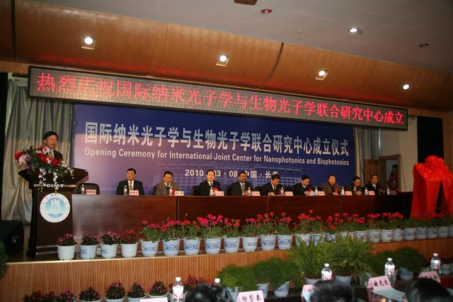

International Joint Research Center for Nano-photonics and Bio-photonics (IJRCNB) is a joint research center to be co-founded by School of Science, Changchun University of Science and Technology (CUST-SS) and the Institute for Lasers, Photonics and Biophotonics (UB-ILPB). Taking the advantages of both institutions, the research center will collaborate in photonics research and its applications in nano-biophotonics, applied photonics, flexible solar cell, non-linear optics, life science and other fields.
